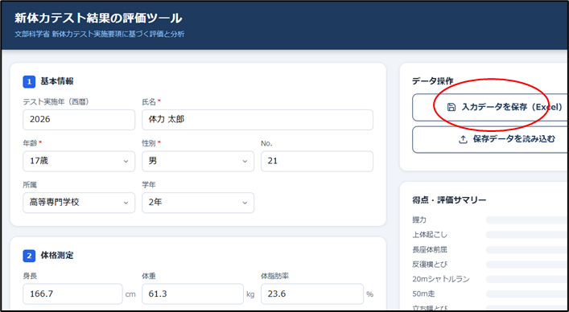
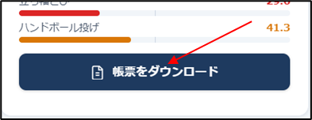
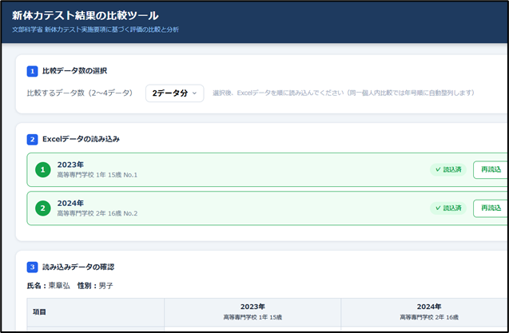
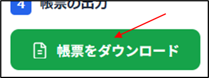

文科省の新体力テスト結果を評価したり，比較するための帳票出力ツールはそれぞれ JavaScript で構築され（JSツール），以下の URL から公開されている．
（a）https://biomech-tools.github.io/petest12-19/
（b）https://biomech-tools.github.io/petest12-19/comparison.html
上記 (a) のリンクを開き，データを入力する（標準データの読み込みについては T-Score を参照）．

入力が完了したら入力データを保存する（Excel形式）．入力データは比較レポートを出力するためには必須のファイルとなる．次に「帳票をダウンロード」をクリックするとHTMLファイルがダウンロードされ，それを開くと自動的に印刷画面が開いて印刷実行が求められる（両面印刷を指定する）．

上記 (b) のリンクを開き，A で保存した Excel データを 2～4 個読み込む．

「帳票をダウンロード」をクリックするとHTMLファイルがダウンロードされ，それを開くと自動的に印刷画面が開いて印刷実行が求められる（両面印刷を指定する）．

※入力データファイル（A）や帳票 HTML（A, B）はダウンロードフォルダに保存される．
A. Azuma
E-mail: jf9psa@jarl.com
Requests for specification changes or customisation, questions regarding operation, and inquiries regarding commercial use will not be accepted.